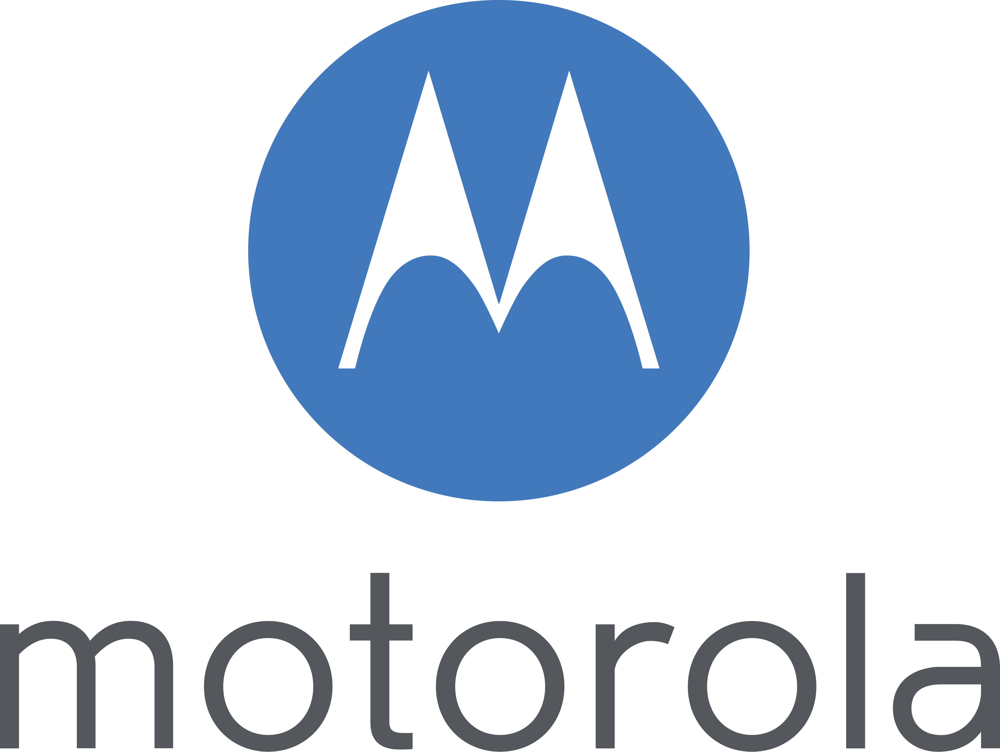
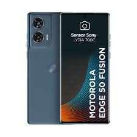
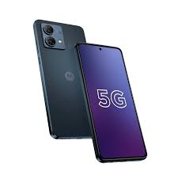
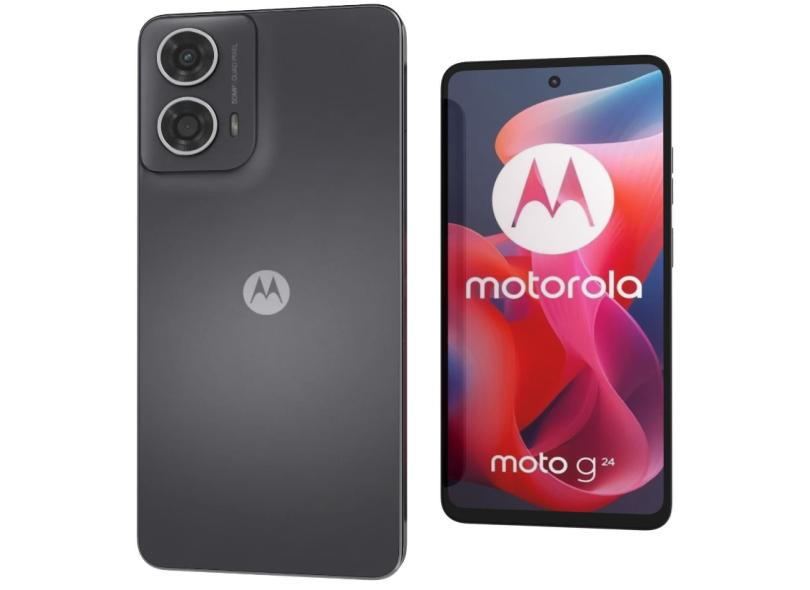

Review: Linha Motorola
A Motorola é muito querida por entregar um Android limpo, livre de travamentos e com atalhos por gestos que facilitam muito a vida (como chacoalhar para ligar a lanterna).

Modelos Disponíveis

Motorola Edge 50 Pro
Tela com bordas curvadas, carregamento ultrarrápido e acabamento super elegante.

Moto G84
Cores vivas e bastante armazenamento interno para você nunca ficar sem espaço para fotos.

Moto G24
Opção ideal de entrada para navegação na internet, WhatsApp e redes sociais.